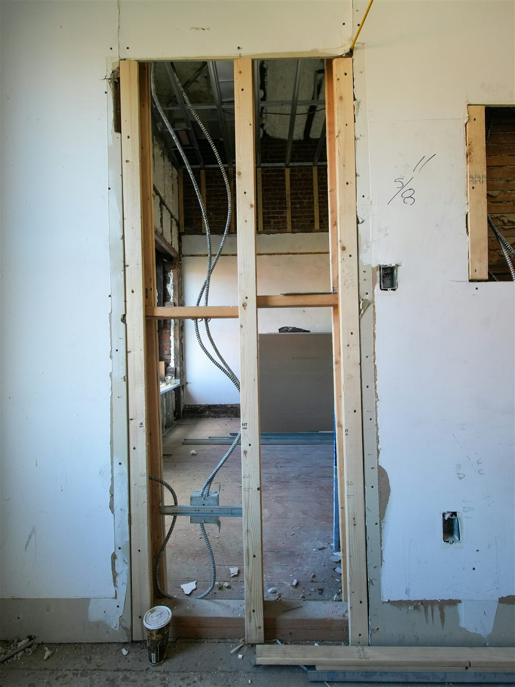
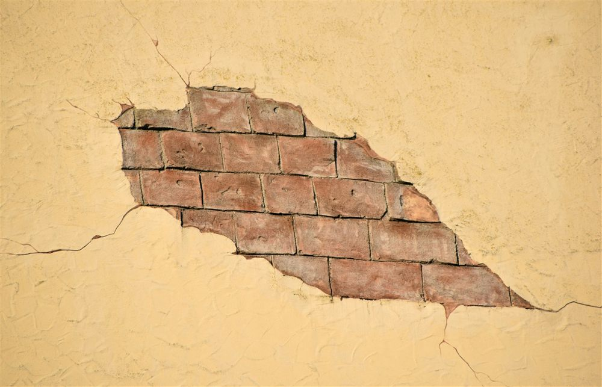

Reconnaître un mur porteur avant d'envisager une ouverture
Un mur porteur est un mur qui participe à la descente des charges du bâtiment vers les fondations : il supporte le poids du plancher ou de la toiture situés au-dessus, en plus de son propre poids. À l'inverse, une cloison de distribution ne joue aucun rôle structurel et peut être modifiée ou supprimée sans conséquence sur la stabilité du bâtiment.
Plusieurs indices permettent d'orienter le diagnostic, sans jamais le remplacer. Un mur porteur est en général plus épais qu'une cloison, souvent situé en façade, en refend central ou en continuité verticale d'un étage à l'autre, voire jusqu'aux fondations. Sa position par rapport aux poutres, aux solives du plancher ou aux fermes de charpente est également un indicateur : un mur situé sous une poutre porteuse, ou perpendiculaire au sens de portée d'un plancher, a de fortes chances de reprendre des charges.
Ces indices restent des présomptions. Un mur épais peut être une simple cloison en maçonnerie ancienne, et un mur fin peut, dans certaines configurations, participer au contreventement du bâtiment. Seule une lecture des plans d'origine, complétée si nécessaire par un relevé structurel sur place, permet de confirmer avec certitude la nature d'un mur avant toute intervention.
En cas de doute, ne partez jamais du principe qu'un mur n'est pas porteur. Une erreur de diagnostic à ce stade est la cause la plus fréquente des désordres observés après une ouverture mal préparée.
Pourquoi on ne perce jamais un mur porteur sans étude
Percer un mur porteur revient à supprimer, sur toute la hauteur de l'ouverture, la matière qui transmettait les charges du niveau supérieur vers le sol. Sans dispositif de reprise correctement dimensionné, cette charge n'a plus de chemin pour descendre : elle se reporte sur les parties de mur restantes, sur le linteau improvisé si un simple élément de couverture a été posé sans calcul, ou directement sur le plancher, qui n'a pas été conçu pour cela.
Le dimensionnement d'une ouverture dans un mur porteur suppose de connaître précisément la charge réellement supportée par ce mur, c'est-à-dire sa descente de charges, la portée de l'ouverture projetée, la nature du support sous le futur linteau et, le cas échéant, l'état des fondations à cet endroit. Sans ces données, aucun linteau ne peut être choisi de façon fiable, quelle que soit l'expérience de l'entreprise qui réalise les travaux.
C'est pourquoi une ouverture de mur porteur relève systématiquement d'une étude structurelle préalable, même lorsque l'ouverture semble modeste. La taille de la baie ne présage en rien de la complexité du dimensionnement : un mur fortement chargé peut nécessiter un renfort important pour une ouverture d'à peine un mètre.
Le principe du linteau ou de la poutre de remplacement
Une fois l'ouverture réalisée, la charge du mur supprimé doit être reprise par un élément horizontal placé au-dessus de la baie : un linteau pour une petite portée, une poutre de reprise pour une ouverture plus large. Cet élément prend appui de part et d'autre de l'ouverture, sur des zones de mur suffisamment résistantes, appelées trumeaux, pour transmettre à leur tour la charge vers les fondations.
Le choix du matériau et de la section dépend de la portée à franchir, de la charge à reprendre et des contraintes d'exécution : poutre en béton armé coulée en place, profilé métallique de type IPE ou UPN, ou solution mixte associant acier et béton. Le tableau ci-dessous donne des ordres de grandeur courants, à titre indicatif uniquement.
| Portée de l'ouverture | Solution courante | Hauteur indicative de poutre |
|---|---|---|
| Jusqu'à 1,50 m | Linteau béton armé coulé en place ou profilé IPE | 15 à 20 cm |
| 1,50 à 2,50 m | Poutre béton armé ou profilé métallique IPE/UPN | 20 à 30 cm |
| 2,50 à 4,00 m | Poutre métallique ou solution mixte acier-béton | 30 à 40 cm, renfort de fondation à vérifier |
| Plus de 4,00 m | Solution structurelle spécifique (poutre reconstituée, portique) | À déterminer au cas par cas |
Ces valeurs ne dispensent en aucun cas d'une note de calcul propre à chaque projet : la charge réellement transmise par le mur, la nature du support des appuis et la présence éventuelle d'une ouverture existante à proximité peuvent faire varier sensiblement la section retenue.

La reprise de charge et le rôle des étais pendant les travaux
Entre le moment où le mur est découpé et celui où le linteau définitif est posé et a fait sa prise, la charge du bâtiment ne peut plus reposer sur rien : elle doit être reprise provisoirement par un système d'étaiement. Des étais métalliques, associés à des lisses de répartition, sont positionnés de part et d'autre du mur pour soutenir le plancher ou la charpente pendant toute la durée de l'intervention.
Le nombre d'étais, leur espacement, leur capacité de charge et la surface d'appui des lisses au sol et en sous-face du plancher doivent être définis en fonction de la charge à reprendre, exactement comme pour le linteau définitif. Un étaiement sous-dimensionné, ou mal réparti, peut céder localement sous une charge pourtant modeste, avec un risque d'affaissement brutal pendant les travaux.
Le phasage compte également : la découpe du mur doit être progressive, en respectant l'ordre prévu par l'étude, et le linteau définitif ne doit être considéré comme opérationnel qu'une fois sa mise en charge effective vérifiée. Les étais ne sont retirés qu'à ce moment, jamais avant.
MH Structure réalise la note de calcul et le plan de renfort qui définissent le linteau ou la poutre de remplacement, la reprise de charge et le phasage de l'étaiement. MH Structure ne réalise pas les travaux de maçonnerie et n'est pas une entreprise générale : la découpe du mur et la pose du linteau relèvent d'une entreprise de maçonnerie ou de gros oeuvre, à partir de nos plans.
Les désordres provoqués par une ouverture réalisée sans étude
Lorsqu'une ouverture est réalisée sans dimensionnement préalable, ou avec un étaiement insuffisant, les désordres n'apparaissent pas toujours immédiatement. Certains se manifestent dès la fin du chantier, d'autres seulement plusieurs mois après, une fois les charges définitivement reportées sur les nouveaux appuis.
- Fissures en escalier apparaissant dans les trumeaux restants ou aux angles de l'ouverture, signe d'une reprise de charge mal répartie.
- Affaissement localisé du plancher au-dessus de l'ouverture, lorsque le linteau fléchit sous une charge supérieure à sa capacité.
- Désaffleurement de portes ou de fenêtres situées à proximité, révélateur d'un mouvement de la structure environnante.
- Fissuration horizontale à la jonction entre le linteau et la maçonnerie existante, souvent liée à un appui insuffisant ou mal réalisé.
Ces désordres, une fois installés, sont nettement plus coûteux à corriger que ne l'aurait été l'étude préalable. Une reprise de désordre implique généralement de reconstituer l'étaiement, de reprendre le linteau, voire de renforcer les fondations sous les nouveaux points d'appui. Pour approfondir l'analyse d'une fissuration existante, notre article sur les fissures dans un bâtiment détaille comment distinguer une fissure bénigne d'une fissure structurelle.
Le rôle du bureau d'études dans un projet d'ouverture
Le bureau d'études structure intervient avant tout début de travaux, dès que le projet d'ouverture est arrêté. Sa mission comprend l'analyse de la structure existante à partir des plans disponibles ou d'un relevé sur place, le calcul de la descente de charges du mur concerné, le dimensionnement du linteau ou de la poutre de remplacement selon l'Eurocode applicable au matériau retenu, et la définition du phasage d'étaiement à respecter pendant le chantier.
Ce travail se matérialise par une note de calcul et un plan de renfort transmis à l'entreprise chargée des travaux. Ces documents précisent la section et le matériau du linteau, la longueur d'appui minimale de part et d'autre de l'ouverture, le dispositif d'étaiement provisoire et, si nécessaire, les dispositions à prévoir en fondation. Pour un mur en béton armé, ce dimensionnement s'accompagne généralement d'un plan de coffrage et d'armatures détaillant la mise en oeuvre.
Les étapes d'un projet d'ouverture bien mené
Un projet d'ouverture de mur porteur suit un enchaînement précis, dont chaque étape conditionne la suivante :
- Diagnostic : confirmation que le mur est bien porteur, à partir des plans d'origine ou d'un relevé sur site.
- Étude structurelle : calcul de la descente de charges, dimensionnement du linteau et du dispositif d'étaiement.
- Vérifications administratives : selon la nature exacte des travaux, une déclaration préalable peut être requise, notamment si l'ouverture touche une façade.
- Étaiement : mise en place du système de reprise provisoire avant toute découpe.
- Découpe et pose du linteau : réalisées par l'entreprise de maçonnerie, en suivant strictement le plan de renfort.
- Dépose des étais : uniquement après vérification que le linteau reprend correctement la charge.
Respecter cet ordre, sans en sauter aucune étape, est ce qui distingue une ouverture durable d'une ouverture qui finira par se manifester par des désordres.

Un projet d'ouverture de mur porteur ? MH Structure établit la note de calcul et le plan de renfort adaptés à votre configuration, pour une transmission claire à votre entreprise de maçonnerie. Devis gratuit sous 48h.
Questions fréquentes
Comment savoir si un mur est porteur avant de le percer ?
Quelques indices permettent d'orienter le diagnostic : une épaisseur supérieure aux cloisons de distribution, une position en continuité verticale entre les étages ou avec les fondations, un alignement avec des poutres ou des poteaux, ou encore la présence de ce mur en façade ou en refend central. Ces indices restent des présomptions. Seule une analyse de la structure du bâtiment, à partir des plans d'origine ou d'un relevé sur place, permet de confirmer avec certitude qu'un mur reprend des charges.
Peut-on ouvrir un mur porteur soi-même ?
Techniquement, la découpe peut être réalisée par un particulier ou une entreprise de maçonnerie. Le risque ne se situe pas dans le geste de découpe mais dans l'absence de dimensionnement préalable : sans étude, rien ne garantit que le linteau posé, sa portée d'appui ou le phasage de reprise de charge soient adaptés aux charges réellement supportées par le mur. Une ouverture mal dimensionnée peut provoquer un affaissement du plancher ou des fissures qui apparaissent parfois plusieurs mois après les travaux.
Faut-il un permis de construire pour ouvrir un mur porteur ?
Une ouverture de mur porteur à l'intérieur d'un logement, sans modification de façade ni de surface, relève généralement d'une déclaration préalable ou d'aucune formalité d'urbanisme selon la nature exacte des travaux et si le bâtiment est ou non soumis à copropriété ou à des règles particulières. En revanche, dès que l'ouverture touche une façade, elle peut nécessiter une déclaration préalable de travaux. Il est recommandé de vérifier ce point en mairie avant de commencer, indépendamment de l'étude structurelle elle-même.
MH Structure réalise-t-il les travaux d'ouverture du mur ?
Non. MH Structure établit la note de calcul et le plan de renfort qui définissent le linteau ou la poutre de remplacement, la reprise de charge et le phasage des étais. La réalisation des travaux de maçonnerie, la découpe du mur et la pose du linteau relèvent d'une entreprise de maçonnerie ou de gros oeuvre. MH Structure n'est pas une entreprise générale et n'intervient pas sur le chantier en tant qu'exécutant.